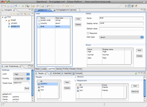

OSDE is the Eclipse Plug-in for developing OpenSocial application. When you want to develop and test a social application, you must use some SNS (ex. orkut.com, myspace.com, hi5.com and etc.). The method of using some SNS may give you a strong limitation. For example, you must make friends for testing your social application, must find some SNS supported many functions, and the server of the SNS must be running stablity.
OSDE is able to provide the individual SNS for you. In this small SNS, you can make some person's profiles, social graph, groups, and most test data. These test data will be used in your OpenSocial application. In addition, OSDE provides some views for listing people, appdata, activities, and etc. in your eclipse. By using these views, you will be able to control most test data and testing your application.
